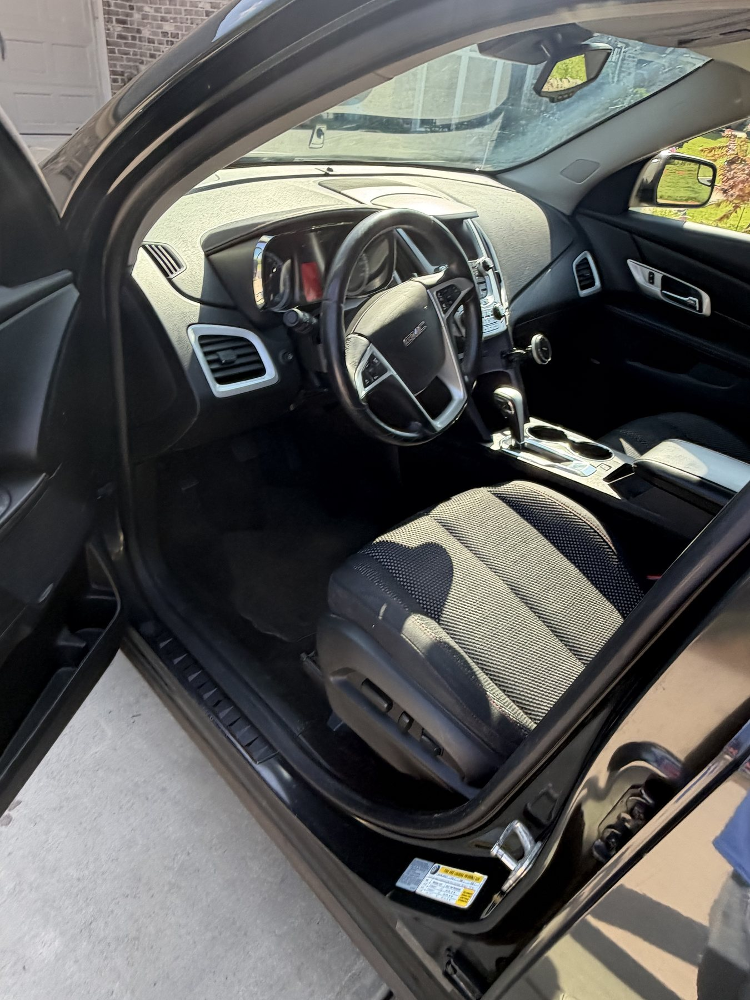

We come to you
Interior Car Cleaning in Winston-Salem & the Piedmont Triad
Crumbs, dust and everyday buildup? 1018 Mobile Detailing cleans your vehicle interior at your home or workplace. Interior Detail starts at $100 for standard-size vehicles in average condition.

What the Interior Detail Includes
- Full vacuum, including the trunk when accessible
- Doors, console, dashboard and plastic surfaces cleaned
- Floor mats cleaned
- Door jambs and interior windows cleaned
Seat Cleaning, Pet Hair, Stains and Odors
Seat and carpet deep cleaning, extraction, heavy pet hair, stains, odor treatment, trash removal and severe buildup need a separate quote. Describe the problem and send photos of the seats, floors and cargo area to help us estimate the work.
Results depend on the material and condition. Severe odors, biological contamination, mold and restoration work may require an inspection before booking. We will discuss the service and pricing before extra chargeable work begins.
Common Questions
Is deep cleaning included in the $100 starting price?
The starting package covers routine interior cleaning. Extraction, heavy pet hair, stains, odors and severe buildup are additional services quoted for your vehicle.
What should I send for a quote?
Send your vehicle make/model, town, preferred date and photos of the seats, floors, cargo area and problem spots. We will confirm pricing and availability before booking.
Book Your First or Next Visit
Already a customer? Text your name, vehicle or property details, town and preferred date. Ask about scheduling your next service. A request is not a confirmed appointment; we will agree on the work, price and availability first.